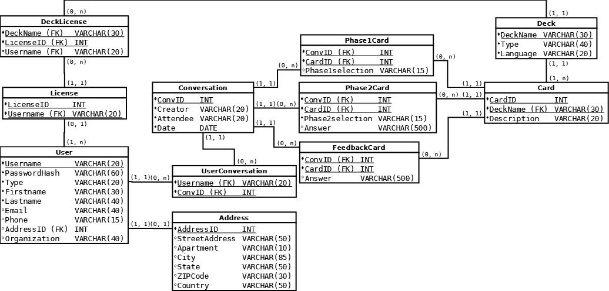
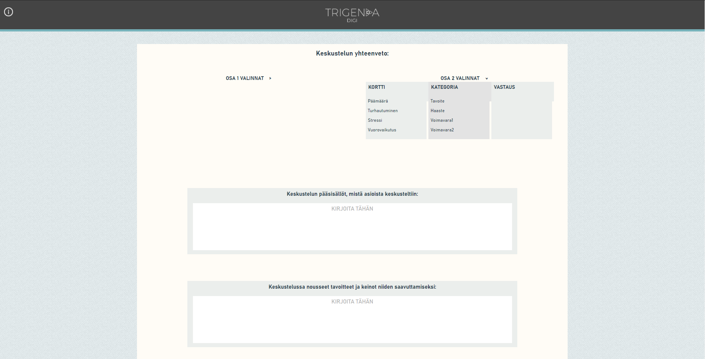

Tietokantamme kaavion viimeisin malli, teimme tämän kaavion ainakin 5 alusta lähtien uusiksi. Rakenne oli todella hankala sada järkeväksi, johtuen epäsevyyksistä asiakkaan suunnalta. Kuitenkin lopuksi saimme tehtyä järkevän näköisen sekä toimivan tietokannan.
DROP DATABASE IF EXISTS trigenda;
CREATE DATABASE trigenda;
USE trigenda;
CREATE TABLE Address (
addressid INT NOT NULL,
streetaddress VARCHAR(50),
apartment VARCHAR(10),
city VARCHAR(85),
state VARCHAR(50),
zipcode VARCHAR(30),
country VARCHAR(50),
PRIMARY KEY (addressid)
) ENGINE=InnoDB;
CREATE TABLE User (
username VARCHAR(20) NOT NULL,
passwordhash VARCHAR(60) NOT NULL,
type VARCHAR(20) NOT NULL,
firstname VARCHAR(30) NOT NULL,
lastname VARCHAR(40) NOT NULL,
email VARCHAR(40),
phone VARCHAR(15),
addressid INT,
organization VARCHAR(40),
PRIMARY KEY (username),
CONSTRAINT user_address_fk FOREIGN KEY (addressid) REFERENCES Address(addressid)
ON DELETE RESTRICT
) ENGINE=InnoDB;
CREATE TABLE License (
licenseid INT NOT NULL,
username VARCHAR(20) NOT NULL,
PRIMARY KEY (licenseid, username),
CONSTRAINT license_user_fk FOREIGN KEY (username) REFERENCES User(username)
ON DELETE RESTRICT
) ENGINE=InnoDB;
CREATE TABLE Deck (
deckname VARCHAR(30) NOT NULL,
type VARCHAR(40) NOT NULL,
language VARCHAR(20) NOT NULL,
PRIMARY KEY (deckname)
) ENGINE=InnoDB;
CREATE TABLE Card (
cardid INT NOT NULL AUTO_INCREMENT,
deckname VARCHAR(30) NOT NULL,
description VARCHAR(20) NOT NULL,
PRIMARY KEY (cardid),
CONSTRAINT card_deck_fk FOREIGN KEY (deckname) REFERENCES Deck(deckname)
ON DELETE RESTRICT
) ENGINE=InnoDB;
CREATE TABLE DeckLicense (
deckname VARCHAR(30) NOT NULL,
licenseid INT NOT NULL,
username VARCHAR(20) NOT NULL,
PRIMARY KEY (deckname, licenseid, username),
CONSTRAINT deck_license_fk FOREIGN KEY (deckname) REFERENCES Deck(deckname)
ON DELETE RESTRICT,
CONSTRAINT deck_license_fk2 FOREIGN KEY (licenseid) REFERENCES License(licenseid)
ON DELETE RESTRICT,
CONSTRAINT deck_license_fk3 FOREIGN KEY (username) REFERENCES User(username)
ON DELETE RESTRICT
) ENGINE=InnoDB;
CREATE TABLE Conversation (
convid INT NOT NULL AUTO_INCREMENT,
creator VARCHAR(20) NOT NULL,
attendee VARCHAR(20) NOT NULL,
date DATE NOT NULL,
PRIMARY KEY (convid)
) ENGINE=InnoDB;
CREATE TABLE UserConversation (
username VARCHAR(20) NOT NULL,
convid INT NOT NULL,
PRIMARY KEY (username, convid),
CONSTRAINT user_conversation_fk FOREIGN KEY (username) REFERENCES User(username)
ON DELETE RESTRICT,
CONSTRAINT user_conversation_fk2 FOREIGN KEY (convid) REFERENCES Conversation(convid)
ON DELETE RESTRICT
) ENGINE=InnoDB;
CREATE TABLE Phase1Card (
convid INT NOT NULL,
cardid INT NOT NULL,
phase1selection VARCHAR(15),
PRIMARY KEY (convid, cardid),
CONSTRAINT phase1_conv_card_fk FOREIGN KEY (convid) REFERENCES Conversation(convid)
ON DELETE RESTRICT,
CONSTRAINT phase1_conv_card_fk2 FOREIGN KEY (cardid) REFERENCES Card(cardid)
ON DELETE RESTRICT
) ENGINE=InnoDB;
CREATE TABLE Phase2Card (
convid INT NOT NULL,
cardid INT NOT NULL,
phase2selection VARCHAR(15),
answer VARCHAR(500),
PRIMARY KEY (convid, cardid),
CONSTRAINT phase2_conv_card_fk FOREIGN KEY (convid) REFERENCES Conversation(convid)
ON DELETE RESTRICT,
CONSTRAINT phase2_conv_card_fk2 FOREIGN KEY (cardid) REFERENCES Card(cardid)
ON DELETE RESTRICT
) ENGINE=InnoDB;
CREATE TABLE FeedbackCard (
convid INT NOT NULL,
cardid INT NOT NULL,
answer VARCHAR(500) NOT NULL,
CONSTRAINT feedback_conv_card_fk FOREIGN KEY (convid) REFERENCES Conversation(convid)
ON DELETE RESTRICT,
CONSTRAINT feedback_conv_card_fk2 FOREIGN KEY (cardid) REFERENCES Card(cardid)
ON DELETE RESTRICT
) ENGINE=InnoDB;
Koko SQL skriptimme

Phase 2 komponentin nykyinen ulkoasu. Tämä komponentti piti viimeisessä sprintissä rakentaa isolta osalta uusiksi, koska siitä ei olisi muuten saatu millään responsiivista. Muun muassa kolmion sisällä olevat pienemmät kolmiot oli pakko vaihtaa vectoreista kuviksi, jotta ne saatiin liikkumaan isomman kolmion mukana. CSS muotoiluja piti myös muuttaa aika rajusti, jotta tämän uuden rakenteen sai toimimaan järkevästi.

Koodin pätkä phase 2 komponentista, joka muuttaa isomman kolmion sisällä olevat kolmiot näkyviksi, kun kyseisen paika kortti on valittu. Tämä on hyvin yksikertainen koodin pätkä, johon alunperin kirjoitin funktion, jokka teki tämän tästmälleen saman asian. Heti kun olin saanut funktion aikaiseksi yksi ryhmämme jäsenistä sanoo minulle, että "vuessa on olemassa v-if rakenne, jolla tuo olisi ollut paljon helpomti tehdä" tässä vaiheessa tietysti sitten rupesin tekemään tätä asiaa uudestaa v-if rakenteella, joka oikeasti teki asiasta paljon helpompaa. Ainut hanakaluus tämän teossa oli, etsiä koodista jokin asia jolla voin näyttää funktiolle milloin sen pitää tehdä asioita.

Toinen phase 2 komponenttiin tehty hyvin yksinkertainen v-if rakenteella tehty homma, joka piilottaa kaikki muut paitsi "voimavara"pakat näkyvistä. Tämä oli todella helppo toteuttaa aiemmin mainitun asian pohjilta, koska ne toimivat hyvin samalla tavalla. Tässä myös mukana logiikka kortin valinnalle keskustelun toisessa vaiheessa.

Yhteenveto sivumme toinen versio, johon rakensimme Eliaksen kanssa kokoneen uuden komponentin, jolla tässä nähdyt tekstilaatikot on tehty. Tämä komponentti vaihtoi myös paikkaa sovelluksessamme, joten jouduimme kirjoittelemaan aika moneen komponenttiin aika monta riviä koodia, jotta saimme tämän toimimaan. Tekstilaatikko komponentit siis ottavat vastaan käyttäjän antaman tekstin ja välittävät sen äiti komponentille, jonne teimme funktion joka tallentaa vastauksen. Tässä ehkä hankalin homma oli tämän komponentin paikan vaihto sovelluksessa se vaati todella paljon ajattelu työtä. Vastauksien tallennuksissa kohtasimme myös aika paljon ongelmia, mutta ne saatiin kuitenkin ratkaistua muiden ryhmämme jäsenten avulla nopeasti.
const saveAnswer = (answer, variable) =>
{
if (variable == 'answer1')
state.answer1 = answer;
else if (variable == 'answer2') state.answer2 = answer;
else if (variable == 'answer3') state.answer3 = answer;
else if (variable == 'answer4') state.answer4 = answer; }
Funktio, joka tallentaa käyttäjän antaman vastauksen yhteenveto komponentissa